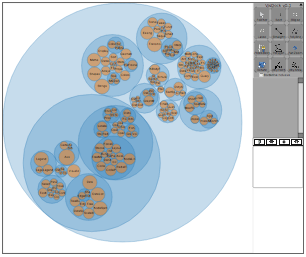

VisDock
VisDock Libraries
VisDock is an interactive web-visualization framework written in JavaScript. VisDock allows visualization
creators to import various VisDock tools into their host visuailzations for exploration and annotation
purposes.

Example
VisDock.js
VisDock.js library contains various tools: such tools include cross-cutting selection tools,
pan/zoom tool, query management tools, and annotation tools. VisDock can be imported into any SVG
rendered visualizations.
2D.js and IntersectionLibrary.js
These libraries provide functions to determine whether the user-drawn shapes or lines cross the
boundaries of SVG objects. These files were obtained from Kevin Lindsey Software Development
(www.kevlindev.com). Cross-cutting selections can be made between:
- Path and Polygon
- Path and Elllipse
- Path and Line
- Polygon and Polygon
- Polygon and Ellipse
- Polygon and Line
- Ellipse and Ellipse
- Ellipse and Line
- Line and Line
visdock.utils.js
2D.js and IntersectionLibrary.js provide functions to determine the intersection of any two SVG objects. For
VisDock.js users, the type of intersection is limited to between user-drawn shapes (polygons, ellipses, and
lines) and SVG objects in the host visualization. visdock.utils.js summarizes these intersections in a
more compact form.
Functions for Initializations
Once the users have drawn a shape using Polygon, Lasso, or Rectangle tool, the array of
the x and y coordinates of the verticies will be passed to the VisDock event handler. This array cannot
be used directly for the verification of intersection because the 2D.js and IntersectionUtilities.js libraries require
specific object formats. The following functions initialize path, polygon, ellipse, and line elements
from the
In order to check the intersection between shapes, it may require to initialize the shapes as
an SVG shape class before passing them as argument. Here are the functions that initialize such shapes.
But note that not all shapes need to be initialized. We will explain further when an object needs to be
initialized.
-
createPolygon (points): initializes an SVG polygon.
- points: when the users use Lasso, Polygon, and Rectangle tools, VisDock stores an array of points
for the lasso, polygon, and rectangle in the array form [[x1, y1], [x2, y2], [x3, y3], ... , [xn, yn]].
This function returns an SVG shape object.
- T: this is the transformation matrix. If the user has used Pan/Zoom tool to modify the scale or
location of the host visualization, this parameter must be specified to reflect the scale and location
of the host visualization relative to the user-drawn polygon.
-
EllipseInit (points, T): initializes an SVG ellipse.
- points: when the user uses Ellipse tool, VisDock stores an array of points for such ellipse in
the form [cx, cy, r1, r2]. This function takes such arrays and creates and returns an SVG ellipse object.
Note that cx and cy describe the center of the ellipse; r1 and r2 are the transverse diameters in the
x and y directions.
- T: this is the transformation matrix.
-
LineInit (points, T): initializes an SVG line.
- points: when the user uses StraightLine, Polyline, and Freeselection tools, VisDock stores an
array of points for such in the form [[x1, y1], [x2, y2], [x3, y3], ... , [xn, yn]]. This function
takes such arrays and creates and returns an SVG line/polyline object.
- T: this is the transformation matrix.
Cross-cutting intersections
-
PathPolygonIntersection (points, shape, path, inclusive, T): checks the intersection between an SVG
path and an SVG polygon.
- points: the array of x and y coordinates of the polygon in the form of [[x1, y1], [x2, y2],
[x3, y3], ... , [xn, yn]]
- shape: shape of the polygon. In order to pass this parameter, the user must initialize the polygon
using PolygonInit function.
- path: the SVG path element
- inclusive: this parameter is either 0 or 1. 0 means not inclusive so that the path element has
to be fully enclosed by the SVG polygon element and vice versa.
- T: this is the transformation matrix.
-
PathEllipseIntersection (points, path, inclusive, T): checks the intersectioni between an SVG path
and an SVG ellipse.
- points: the array of points that include the coordinates of the center of the ellipse, transverse
diameters in the x and y directions. This parameter is passed in the form of [cx, cy, ra, rb]
- path: the SVG path element
- inclusive: this parameter is either 0 or 1. 0 means not inclusive so that the path element has to
be fully enclosed by the SVG polygon element and vice versa.
- T: this is the transformation matrix.
-
PathLineIntersection (points, path, T): checks the intersection between an SVG path and an SVG line.
- points: the array of points of the line. The line can consist of a few segments. If the line
is just one straight line, then this parameter would be in the form [x1, y1, x2, y2]. If the line has
a number of segments (e.g. curves), this parameter would be in the form [x1, y1, x2, y2, x3, y3, ... ,
xn, yn]
- path: the SVG path element
- inclusive: this parameter is either 0 or 1. 0 means not inclusive so that the path element has
to be fully enclosed by the SVG polygon element and vice versa.
- T: this is the transformation matrix.
-
PolygonPolygonIntersection (points, shape, polygon, inclusive, T): checks the intersection between
an SVG polygon and an SVG polygon.
- points: the array of points of the shape (second argument), which is a polygon. Usually, this
polygon is created using Lasso, Polygon, or Rectangle Tool.
- shape: this shape is an SVG polygon object whose points are the same points as the first
argument (points).
- polygon: This is an SVG polygon belonging to the original host visualization.
- inclusive: this parameter is either 0 or 1. 0 means not inclusive so that the path element has
to be fully enclosed by the SVG polygon element and vice versa.
- T: this is the transformation matrix.
-
EllipsePolygonIntersection (points, shape, points2, inclusive, T): checks the intersection between an
SVG polygon and an SVG ellipse.
- points: the array of points describing the ellipse, include the coordinates of the center of the
ellipse, transverse diameters in the x and y directions. This parameter is passed in the form
[cx, cy, ra, rb].
- shape: this shape is an SVG polygon object whose points are the same points as the third argument
(points2).
- points2: the array of x and y coordinates of the polygon in the form of [[x1, y1], [x2, y2],
[x3, y3], ... , [xn, yn]]. This array describes the polygon (shape), which is usually created by using
Lasso, Polygon, or Rectangle Tool.
- inclusive: this parameter is either 0 or 1. 0 means not inclusive so that the path element has to
be fully enclosed by the SVG polygon element and vice versa.
- T: this is the transformation matrix.
-
LinePolygonIntersection (points1, points2, shape, inclusive, T): checks the intersection between
an SVG polygon and an SVG line.
- points: the array of points of the polygon (shape in the third argument).
- points2: the array of x and y coordinates of the line or line segments. If the user wants to
check the intersection between line segments (curves or polylines) and a polygon, this arguments may
have a length greater than 2.
- shape: this shape is an SVG polygon object whose points are the same points as the first
argument (points). This argument needs to be initialized using PolygonInit before being passed.
- inclusive: this parameter is either 0 or 1. 0 means not inclusive so that the path element
has to be fully enclosed by the SVG polygon element and vice versa.
- T: this is the transformation matrix.
-
EllipseEllipseIntersection (points1, points2, inclusive, T): checks the intersection between an SVG
ellipse and an SVG ellipse.
- points: the array describing the first ellipse that include the coordinates of the center of the
ellipse, transverse diameters in the x and y directions. This parameter is passed in the form
[cx, cy, ra, rb]
- points2: the array of x and y coordinates of the line or line segments. If the user wants to check
the intersection between line segments (curves or polylines) and a polygon, this arguments may have a length
greater than 2.
- shape: this shape is an svg polygon object whose points are the same points as the first argument
(points). This argument needs to be initialized using PolygonInit before being passed.
- inclusive: this parameter is either 0 or 1. 0 means not inclusive so that the path element has to be
fully enclosed by the svg polygon element and vice versa.
- T: this is the transformation matrix.
-
EllipseLineIntersecction (ellipse, points, inclusive, T): checks the intersection between an SVG
elliipse and an SVG line.
- ellipse: an SVG ellipse object
- points: the array of x and y coordinates of the line or line segments. If the user wants to check
the intersection between line segments (curves or polylines) and an ellipse, this arguments may have a
length greater than 2.
- inclusive: this parameter is either 0 or 1. 0 means not inclusive so that the path element
has to be fully enclosed by the SVG polygon element and vice versa.
- T: this is the transformation matrix.
-
LineLineIntersection (points, points2, inlusive, T): checks the intersection between an SVG line and
an SVG line.
- points: the array of x and y coordinates of the first line or line segments. This argument may have a
length greater than 2 if it is a polyline or a curve.
- points: the array of x and y coordinates of the second line or line segments. This argument may have
a length greater than 2 if it is a polyline or a curve.
- inclusive: this parameter is either 0 or 1. 0 means not inclusive so that the path element has to be
fully enclosed by the SVG polygon element and vice versa.
- T: this is the transformation matrix.
Other useful functions:
- getNumberOfCircles: this function returns the number of circles that belong in the original visualization.
It is an important function because users may make selections and subsequently create SVG circle objects. So
the total number of SVG circle objects will change.
- getNumberOfPaths: this function returns the number of path elements that belong in the original visualization.
- getPolygons: this function returns the SVG polygons that belong in the original visualization.
- getEllipses: this function returns the SVG ellipses that belong in the original visualization.
- getLines: this function returns the SVG lines that belong in the original visualization.
- getQueryColor (index): returns the pre-defined color for a specific query. The index of the query is the
input argument.
- getQueryVisibility (index): returns the visibility of the layers of a specific query. This value is
between 0 and 1.
- CheckNodeConditions (obj, attr, str): this function is very important in that the users may not only
check the intersection but also impose a condition on which the object may be selected. For instance, take
an example of
Circle Packet. This visualization consists of circles of different hierarchy. The users may wish to
verify interection of the user-defined shapes and only the leaf nodes (orange circles), thus ignoring all
other circles of higher hierarchy. This function will perform such condition check.
- 1st argument (obj): the SVG object whose attributes the users may verify
- 2nd argument (attr): any attributes such as "class","id","color" and etc.
- 3rd argument (str): a string that describes such attribute (2nd argument).
{kind=link}